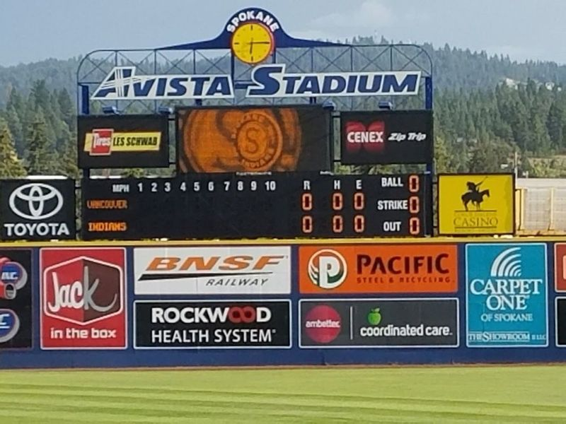
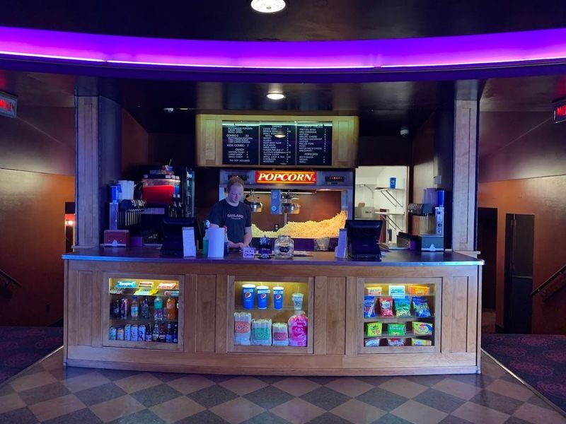
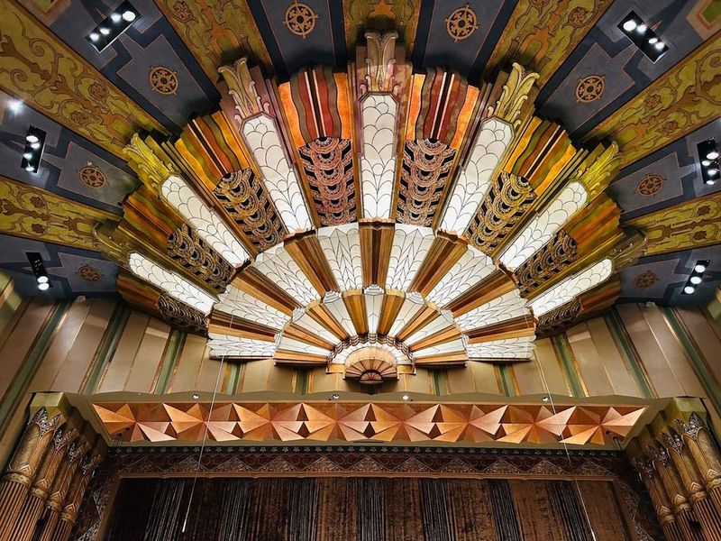
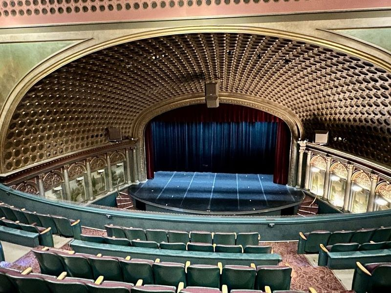
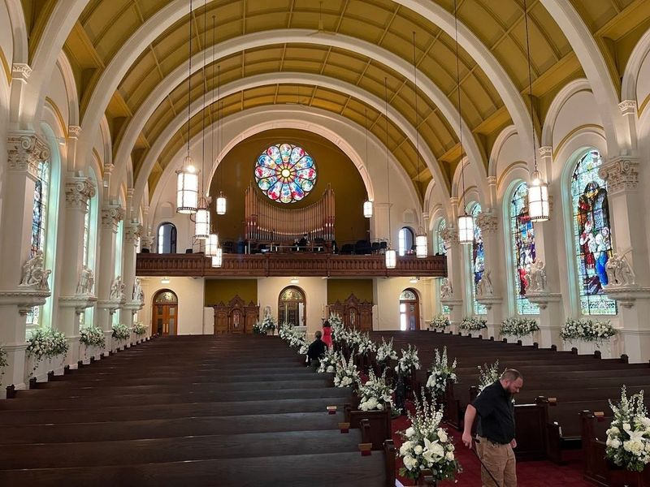
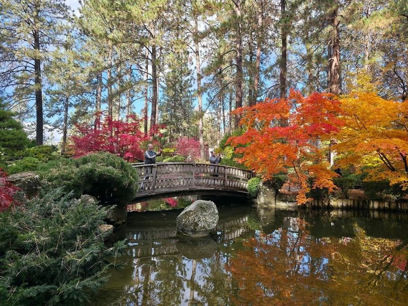
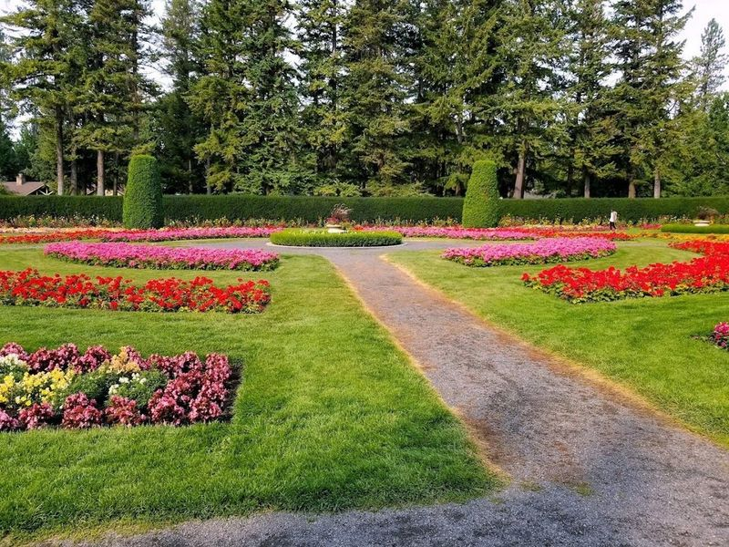
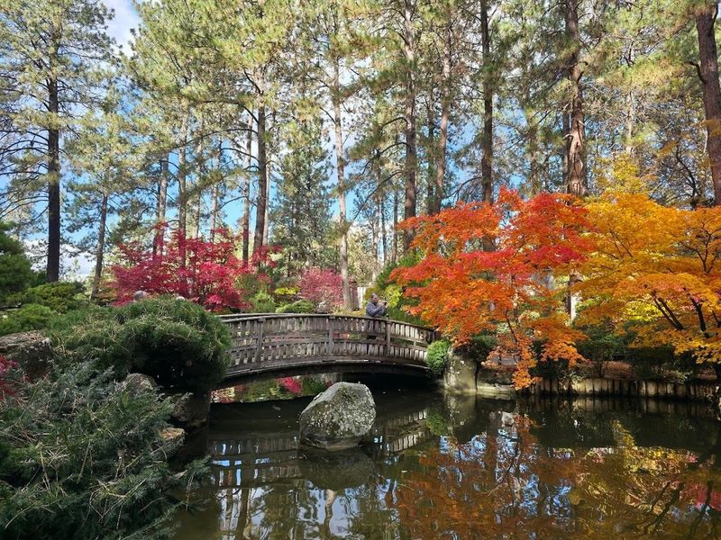
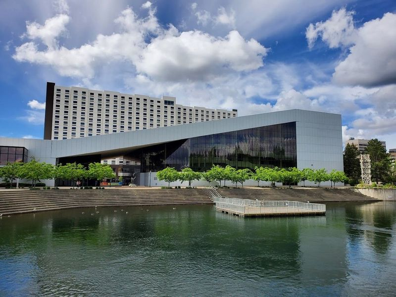
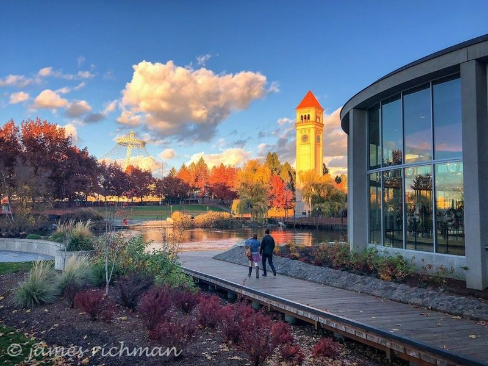

Explore Spokane, WA
A Brief History
Spokane prospered after the Northern Pacific Railway arrived in 1881, turning Spokane Falls lumber mills and mines into an Inland Empire wholesale centre. Riverfront Park expo grounds, Davenport Hotel brick, and Mission Revival churches document how Washington's eastern wheat belt, hydroelectric power, and Expo 74 revitalization reshaped a Palouse trade city.
Attractions Map
Top Sights & Activities

Avista Stadium
Avista Stadium, home to the Spokane Indians, offers an enjoyable experience for baseball fans and non-fans alike. The minor league team plays regional opponents from June to early September in this well-maintained stadium that can accommodate over 6,800 spectators. Whether you're a die-hard fan or just looking for a fun outing during the summer months, catching a game at Avista Stadium is recommended.

Garland Theater
The Garland Theater, a historic movie house that opened in 1945, continues to entertain the community with its classic and modern film screenings. Over the years, it has undergone various upgrades to maintain a state-of-the-art image, including the introduction of widescreen technology and new seating. Despite changing ownership and facing competition from larger cineplexes, the theater remains a beloved venue for families looking to enjoy affordable movie nights.

The Fox Theater
The Fox Theater, situated in Spokane, Washington, is a beautifully restored 1931 art deco movie palace that has become a focal point of the city's cultural landscape. Designed by renowned architect Robert Reamer, this historic venue boasts architecture with intricate detailing and a grand marquee that lights up the night sky.

Bing Crosby Theater
The Bing Crosby Theater, originally built in 1915 as a silent film movie house, has evolved into an elegant venue with a retro flair. Renamed after Bing Crosby's performance there in the 1920s, it now hosts a rich variety of live music, comedy shows, and other performances. With three renovations over its 102-year history, this 744-seat theater offers an immersive experience for attendees.

Cathedral of Our Lady of Lourdes
Nestled in the heart of Downtown Spokane, the Cathedral of Our Lady of Lourdes is a Catholic church that has been a cornerstone for the community since its establishment in 1881. This architectural gem showcases Italian Romanesque Revival style, captivating visitors with its striking design. Over the years, it has evolved from a humble carpenter's shop to an impressive cathedral, thanks to renovations like those completed in 1971 that blend historical charm with modern updates.

Manito Park
Manito Park, a 78-acre park opened in 1904, is a outdoor recreation and leisure area in Spokane. The park features various gardens such as rose, lilac, formal, and native plant gardens along with a picturesque pond. With its immaculately tended terrain spanning 90 acres, including an arboretum, conservatory, and botanical gardens named after the Algonquin word "manitou," meaning fundamental life force animating all things.

Duncan Garden
Duncan Garden is a European Renaissance-style garden located within Manito Park in Spokane, Washington. Named after John W. Duncan, the former park superintendent, this garden features meticulously manicured displays and winding pathways for visitors to explore. Along with four other distinct gardens, Duncan Garden contributes to the park's national recognition for its diverse plant life and horticultural exhibits.

Nishinomiya Tsutakawa Japanese Garden
Nishinomiya Tsutakawa Japanese Garden is a serene and traditional garden located in Manito Park, Spokane. It was meticulously planned over 12 years to honor the sister city relationship between Spokane and Nishinomiya, Japan. The garden features a variety of blooming flowers, a strolling-style pond, and various Japanese elements that create a tranquil outdoor space.

First Interstate Center for the Arts
First Interstate Center for the Arts anchors a familiar sightseeing stop in Spokane, WA. Visitors encounter it along the city’s central routes through United States, often combining the visit with nearby parks, museums, and historic streets on the same itinerary. Street-level access and clear signage make it easy to reach on foot or by public transit from downtown districts.

Riverfront Park
Riverfront Park, the site of the 1974 World's Fair, is a 100-acre oasis in Spokane that offers a blend of natural beauty and urban attractions. The park features landmarks such as the clock tower, giant wagon, building blocks, and the world fair tent. Families can enjoy picnics by the river and entertainment for kids while taking leisurely walks. A recent addition to the park is the ice ribbon that provides a unique experience around Downtown Spokane.